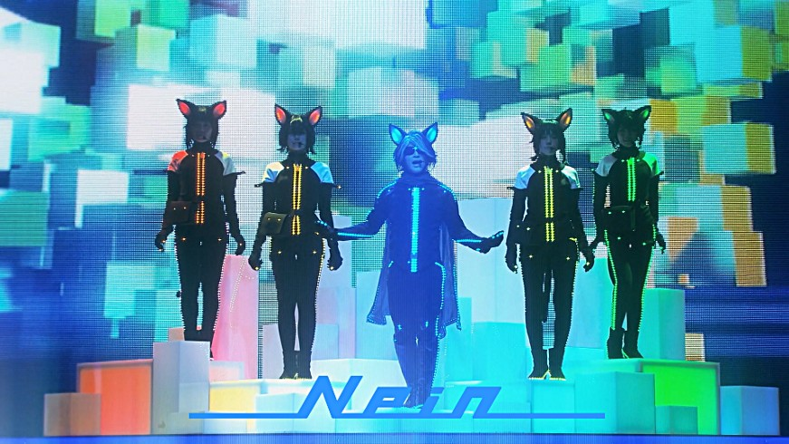
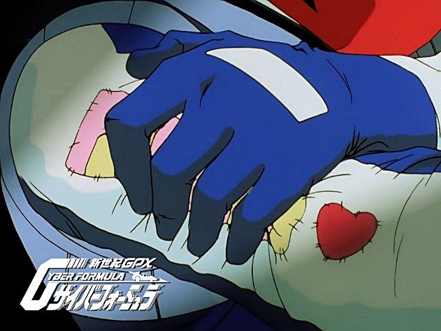
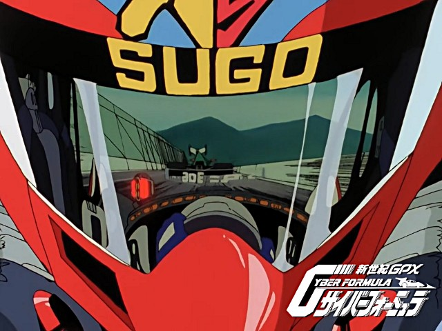
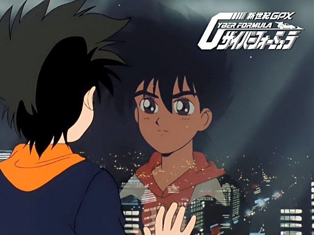

Bienvenue sur le site de la Nobluesky Fansub !
Teekyuu Saison 8 Ep 1 vostfr
Bonjour,
J'espère que votre année professionnelle ou scolaire commence bien.
On revient en ce temps des momiji (bon, les feuilles sont encore vertes par ici^^) avec la saison 8 tant désirée de Teekyuu !
Cette fois c'est du lourd, deux minutes bien chargées en rigolade. Espérons que...
Sound Horizon - Ori no Naka no Hakoniwa vostfr

Bonjour à tous,
Une fois n'est pas coutume, je déroge un peu à mes habitudes pour vous proposer une chanson de Sound Horizon, qui est l'introduction de leur dernier concert (qui ressemble assez à une comédie musicale), 9th Story - Nein.
Si vous ne les connaissez pas, sachez que Linked Horizon est une de leurs branches, à qui on doit les deux openings badass d'Attack on Titan !
Quelques petites infos nécessaires à la compréhension...
Future GPX Cyber Formula BD 37 vostfr

Bonjour à tous,
Aujourd'hui, grande nouvelle ! Voici, après deux ans de fansub (le site est né un 26 Juillet) la finale de Future GPX Cyber Formula ! (pardon d'avance pour le pavé)
Hayato et son équipe ont fait partie intégrante de ma vie durant ces deux dernières années, et c'est un peu comme si j'avais vécu avec les personnages durant toutes ces heures de travail.
Ce que j'aime particulièrement...
Future GPX Cyber Formula BD 36 vostfr

Bonjour à tous les fans de Cyber Formule !
Aujourd'hui, grande nouvelle, on commence la finale du Grand Prix Mondial ! Avec une débauche d'images sympas, et une ambiance du tonnerre.
Ganbatte, Hayato !!
Bon épisode, et à la prochaine...
Future GPX Cyber Formula BD 35 vostfr

Bonjour à tous !
J'espère que l'été se passe bien pour vous. Avec les vacances, l'impatience monte pour retrouver l'épisode suivant, je peux le voir sur les stats des visites :P Et si en plus je suis à la bourre pile au moment plein de suspense... Gomen !
Bon, voici les évènements de l'après-course d'Allemagne...